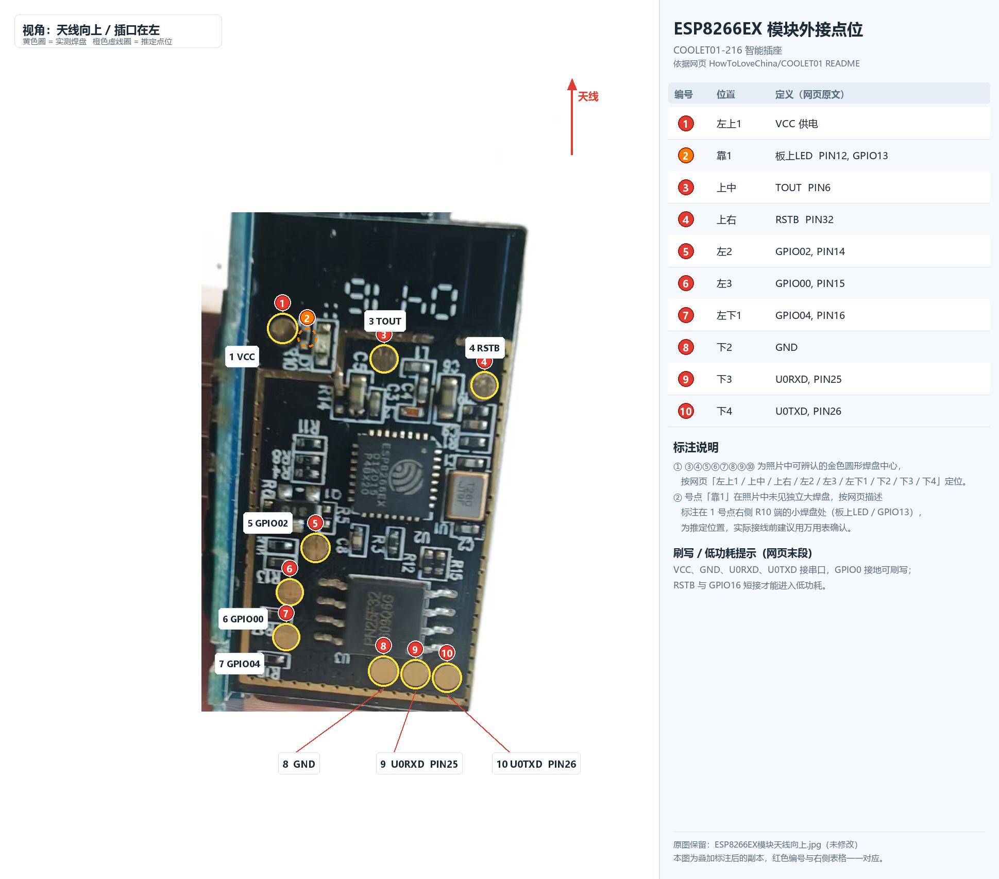
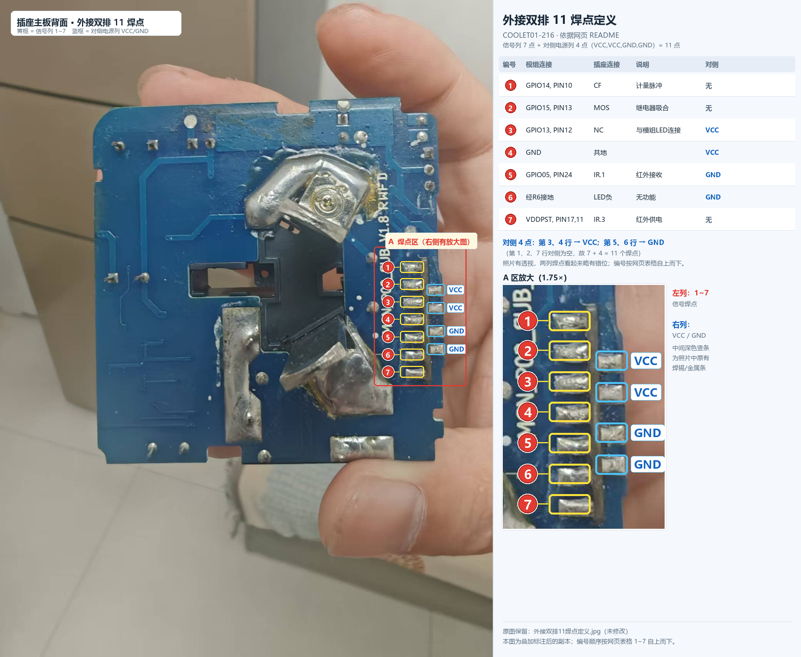

COOLET01-216 智能插座 · 点位对照
依据网页
HowToLoveChina/COOLET01 的 README 定义，在实拍照片上标注点位 · 北京国电通网络技术有限公司
原图保留：两张原始 JPG 均未被修改，标注内容另存为
ESP8266EX模块天线向上_点位标注.png 与
外接双排11焊点定义_点位标注.png。
下方「原图 / 标注图 / 并排」可直接切换查看。
一、ESP8266EX 模块外接点位（10 点）
面对模块、天线向上、插口在左；自上向下、自左向右编号 1~10。


| 编号 | 位置 | 说明（网页原文） |
|---|---|---|
| 1 | 左上1 | VCC 供电 |
| 2 | 靠1 | 板上LED PIN12, GPIO13 |
| 3 | 上中 | TOUT PIN6 |
| 4 | 上右 | RSTB PIN32 |
| 5 | 左2 | GPIO02, PIN14 |
| 6 | 左3 | GPIO00, PIN15 |
| 7 | 左下1 | GPIO04, PIN16 |
| 8 | 下2 | GND |
| 9 | 下3 | U0RXD, PIN25 |
| 10 | 下4 | U0TXD, PIN26 |
推定2 号点：照片里 1 号点附近没有独立的大圆形焊盘，
按网页「靠1 / 板上LED」的描述，标在 1 号点右侧 R10 端的小焊盘上；接线前建议万用表确认。
刷写：VCC、GND、U0RXD、U0TXD 接串口，GPIO0 接地可刷写； RSTB 与 GPIO16 短接才能进入低功耗。
刷写：VCC、GND、U0RXD、U0TXD 接串口，GPIO0 接地可刷写； RSTB 与 GPIO16 短接才能进入低功耗。
位置示意（按网页「左上1 / 上中 / 上右 / 左2 / 左3 / 左下1 / 下2~下4」），非实际比例。
二、外接双排 11 焊点
信号列 7 点（1~7）+ 对侧电源列 4 点（VCC、VCC、GND、GND）= 11 个焊点。


| 位置 | 模组连接 | 插座连接 | 说明 | 对侧 |
|---|---|---|---|---|
| 1 | GPIO14, PIN10 | CF | 计量脉冲 | 无 |
| 2 | GPIO15, PIN13 | MOS | 继电器吸合 | 无 |
| 3 | GPIO13, PIN12 | NC | 与模组LED连接 | VCC |
| 4 | GND | 共地 | — | VCC |
| 5 | GPIO05, PIN24 | IR.1 | 红外接收 | GND |
| 6 | 经R6接地 | LED负 | 无功能 | GND |
| 7 | VDDPST, PIN17,11 | IR.3 | 红外供电 | 无 |
双排读法：左列 7 个镀锡焊点自上而下为 1~7；对侧只有第 3、4 行（VCC）与第 5、6 行（GND）有焊点，
第 1、2、7 行对侧为空，合计 7 + 4 = 11 点。照片有透视，两列看起来略有错位；
中间深色竖条是照片里原有的焊锡/金属条。
位置示意（按网页表格顺序），非实际比例。
标注生成脚本：
annotate_points.py（记录了各焊盘在照片中的像素坐标，可自行微调后重新生成）。